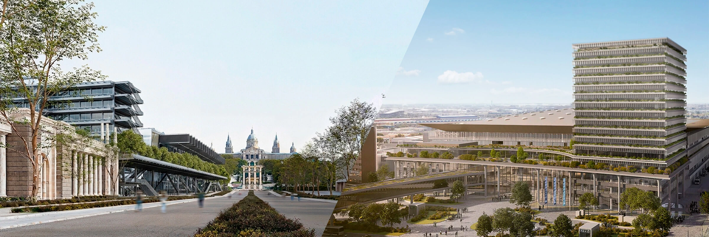
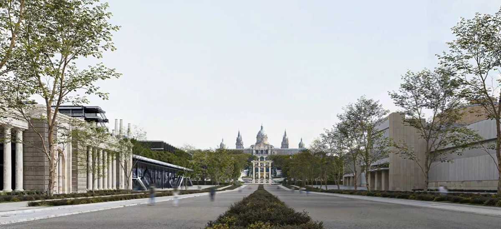
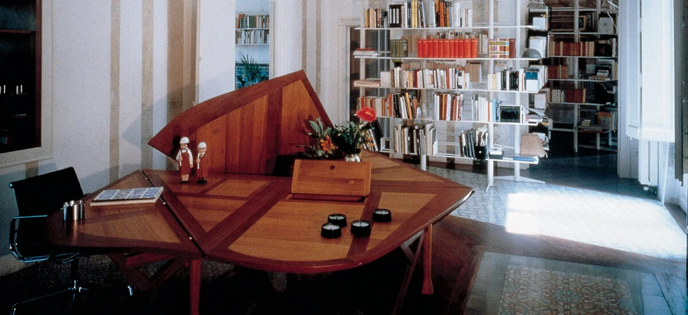
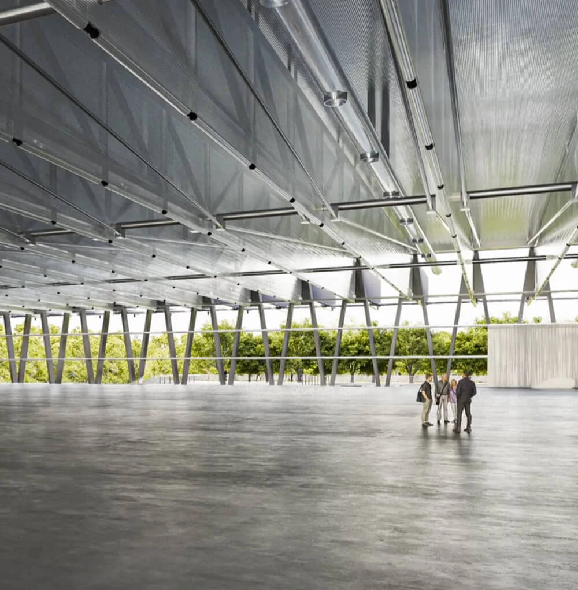

En colaboración con Fira de Barcelona
Videopodcast · Temporada 02
Seis conversaciones para entender cómo la arquitectura transforma la ciudad y nuestra forma de vivir.
Ver episodiosEste 2026, Barcelona es Capital Mundial de la Arquitectura, una oportunidad para mirarla como una herramienta capaz de transformar ciudades, conectar épocas y responder a los grandes retos contemporáneos.
A través de seis conversaciones, este videopodcast recorre espacios, ideas y personas que están construyendo la Barcelona del presente y el futuro.

Episodio 01
Transformar sin borrar la memoria
Con Smiljan Radić
El arquitecto chileno, ganador de un Premio Pritzker, reflexiona sobre cómo cambiará este enclave icónico.

Episodio 02
Arquitectura para el bienestar cotidiano
Con Benedetta Tagliabue
Fundadora de EMBT Architects, es uno de los rostros más reconocidos de la arquitectura barcelonesa.
Episodio 03
Edificios capaces de transformar una ciudad
Con Fermín Vázquez
Una charla con el fundador del estudio b720 y autor de Zero, el nuevo pabellón del Recinto de Gran Via de Fira de Barcelona.
Episodio 04
Nuevas respuestas para retos actuales
Con Anna Bach
Cofundadora del estudio Anna & Eugeni Bach, nos invita a reimaginar cómo construir acorde con los nuevos tiempos.
Episodio 05
La transformación que abrió Barcelona al mundo
Con David Martínez
El historiador recuerda cómo la Exposición de 1929 situó la ciudad en el mapa internacional.
Episodio 06
Nuevas formas de edificar y habitar
Con Ivet Gasol
La cofundadora de Cierto Estudio reflexiona sobre cómo reducir la huella medioambiental de la arquitectura.
Este año en que Barcelona es Capital Mundial de la Arquitectura, Fira de Barcelona vive una etapa histórica con la ampliación y remodelación de sus recintos feriales de Gran Via y Montjuïc con proyectos icónicos, de gran valor arquitectónico y capacidad transformadora. Además ha acogido el Congreso Mundial de Arquitectos en el CCIB, mientras, a través de sus salones y congresos continúa desvelando el futuro de nuestras casas, ciudades y sociedad.
